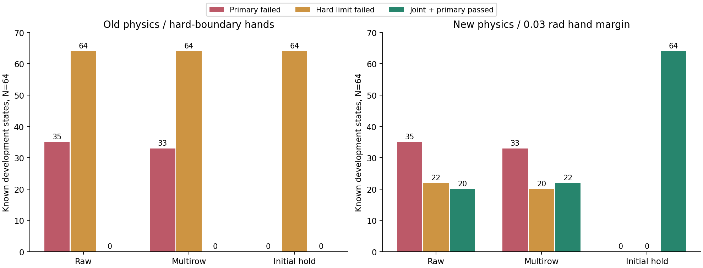
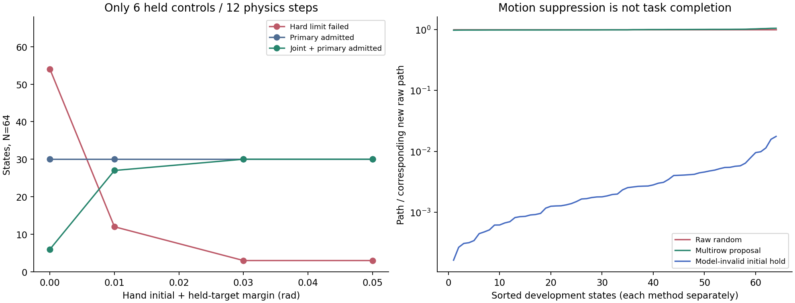
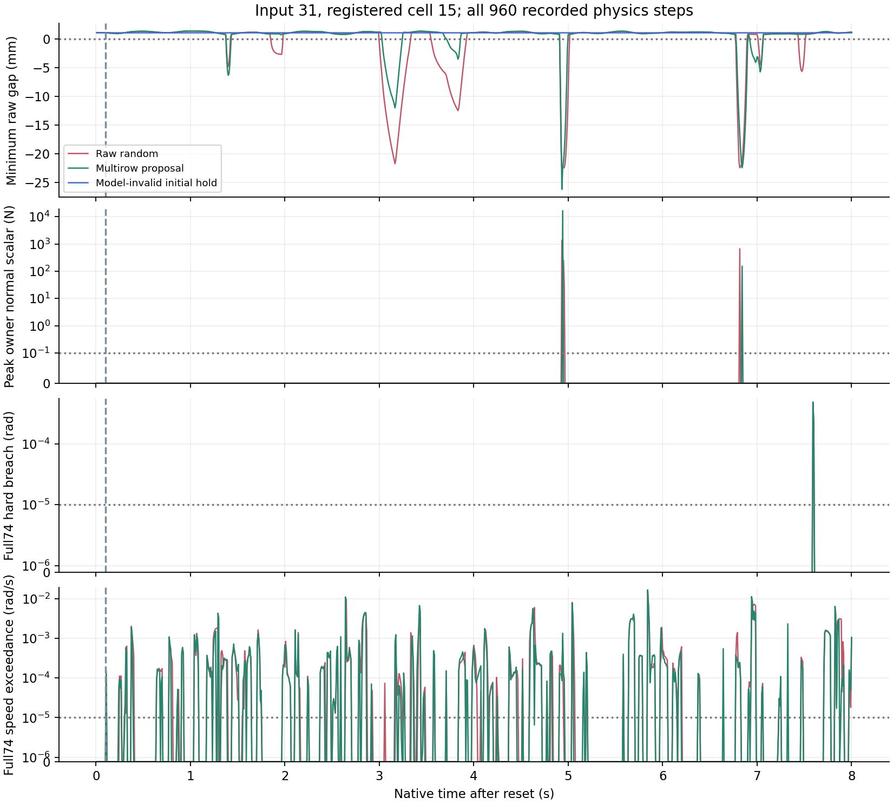

2026-10-09 · 原生物理 · 已知开发集 · 64 初态全部保留
手部限位修复后，回退机制真的安全了吗
新设置下，回退策略的采样联合通过为 64/64，主判据失败 0/64，关节越界 0/64。回退／无保护路径长度中位数为 0.197%。这些结果只适用于本页固定开发输入与 960 个记录物理步；减少运动不能等同于完成四臂任务。
1. 完整 8 秒：同初态、同随机目标、同物理设置
三种方法均使用 64 次位置求解迭代、0 次速度迭代、0.03 rad 手部余量，运行 480 个控制步／960 个物理步。26 个机械臂关节的初始位置、完整初始速度、根位姿和整条随机目标带相同；全部 74 个关节在前 6 个不可撤销等待步的位置、速度和实际目标逐值一致。每个初态全部计分，未按新结果替换或剔除。
| 方法 | 初态 | 实际等待段主判据合格 | 主判据失败 | 几何失败 | 接触失败 | 74关节越界 | 74关节速度超限 | 联合通过 | 四臂均有运动 |
|---|---|---|---|---|---|---|---|---|---|
| 无保护随机 | 64 | 64 | 35 | 34 | 26 | 22 | 34 | 20 | 64 |
| 多行提案 | 64 | 64 | 33 | 32 | 25 | 20 | 33 | 22 | 64 |
| 模型无效则回到初始目标 | 64 | 64 | 0 | 0 | 0 | 0 | 0 | 64 | 48 |
联合通过要求全部记录步同时满足：9,021 对原始几何间隙 ≥0 m、82 个碰撞刚体接触法向标量 ≤0.1 N、74 关节硬限位越界 ≤10⁻⁵ rad、速度超限 ≤10⁻⁵ rad/s。计数包含等待段。点接触由原始点法向分量独立累加；FIFO、实际求解根参数、手部余量及全部指令分支均核对。


| 新设置方法 | 最小原始间隙 mm | 峰值接触法向标量 N | 最大硬限位越界 rad | 最大速度超限 rad/s |
|---|---|---|---|---|
| 无保护随机 | -63.301 | 11407.936 | 1.79057 | 143.921 |
| 多行提案 | -63.096 | 16508.475 | 1.46387 | 177.843 |
| 模型无效则回到初始目标 | 0.856 | 0.000 | 2.38419e-06 | 0 |
失败次数减少不代表每一种风险都降低；多行提案的接触峰值仍需单独查看。模型无效回退触发 30,720/30,720 次初态控制；它的通过计数应与动作抑制一起解释。
2. 手部余量：短等待段的独立因素对照
此处为原始几何库前 64 个初态，包含物理准入失败项，与完整随机验证的 64 个初态不同。固定 64 次求解迭代，仅同时改变手部初始位置和保持目标到硬限位的余量。机械臂初态、速度、根位姿、增益与阈值保持相同；每组只测前 6 个保持控制步／12 个物理步。零余量基线精确复现；四组全部 64 个初态保留。
| 余量 rad | 原始初态 | 几何／接触准入 | 关节越界 | 速度超限 | 等待段联合准入 | 最大越界 rad |
|---|---|---|---|---|---|---|
| 0 | 64 | 30 | 54 | 29 | 6 | 0.00115143 |
| 0.01 | 64 | 30 | 12 | 29 | 27 | 0.000945651 |
| 0.03 | 64 | 30 | 3 | 29 | 30 | 0.00109553 |
| 0.05 | 64 | 30 | 3 | 29 | 30 | 0.000954993 |
0.03 rad 是本次所测最小的、能让 30 个几何／接触准入初态全部同时满足关节判据的余量。剩余 3 个关节越界初态属于准入失败项，仍计入分母。该结果本身不证明 8 秒安全、最优余量或生产参数可用。


3. 旧设置回退：消除接触仍未通过关节验收
先前相同随机输入的首批 64 个初态，使用原始 8 次位置求解和硬限位边界手部目标。模型不满足约束时，对该初态四臂 26 个关节一起发回初始目标；6 步 FIFO 保留。旧回退全部 30,720 次初态控制触发回退，主判据失败由 35 降到 0，但关节越界仍为 64/64、联合通过仍为 0/64；路径中位数仅原始随机的 0.220%。此处反映动作抑制，并非协同任务成功。
| 方法 | 初态 | 主判据失败 | 几何失败 | 接触失败 | 74关节越界 | 74关节速度超限 | 联合通过 | 四臂均有运动 |
|---|---|---|---|---|---|---|---|---|
| 无保护随机 | 64 | 35 | 34 | 26 | 64 | 34 | 0 | 64 |
| 多行提案 | 64 | 33 | 32 | 25 | 64 | 33 | 0 | 64 |
| 模型无效则回到初始目标 | 64 | 0 | 0 | 0 | 64 | 0 | 0 | 48 |
4. 真实轨迹指标：预先固定案例
沿用旧实验在结果产生前登记的批内槽位 0、23、42、61，覆盖组合 0、5、10、15。三方法曲线展示全部 960 个原生物理步；虚线 0.1 s 表示新发目标最早能越过原有 FIFO。新诊断关闭相机，本页未生成新视频；旧设置四视角录像的参数和实验范围保持原标注。
输入 31 · 组合 15。无保护：最小间隙 -22.415 mm，法向峰值 1371.934 N，硬限位越界 0.000464078 rad；多行提案：最小间隙 -26.191 mm，法向峰值 16508.475 N，硬限位越界 0.000483811 rad；回退：最小间隙 1.117 mm，法向峰值 0.000 N，硬限位越界 0 rad；回退／无保护路径 0.179%，动作抑制不等于任务成功。


展开全部 64 个初态联合判据与路径比例
下载全部指标 CSV，原始数值与失败分项见独立复算 JSON／NPZ。
| 输入／组合 | 无保护联合通过 | 多行联合通过 | 回退联合通过 | 回退／无保护路径 |
|---|---|---|---|---|
| 0／0 | 通过 | 通过 | 通过 | 0.458% |
| 32／0 | 通过 | 通过 | 通过 | 0.260% |
| 48／0 | 通过 | 通过 | 通过 | 0.310% |
| 96／0 | 通过 | 通过 | 通过 | 0.270% |
| 81／1 | 通过 | 通过 | 通过 | 0.127% |
| 129／1 | 通过 | 通过 | 通过 | 0.175% |
| 145／1 | 通过 | 通过 | 通过 | 0.150% |
| 193／1 | 失败 | 失败 | 通过 | 0.086% |
| 2／2 | 失败 | 失败 | 通过 | 0.067% |
| 50／2 | 失败 | 失败 | 通过 | 0.016% |
| 66／2 | 失败 | 失败 | 通过 | 0.048% |
| 98／2 | 失败 | 失败 | 通过 | 0.031% |
| 19／3 | 失败 | 失败 | 通过 | 0.027% |
| 51／3 | 失败 | 失败 | 通过 | 0.045% |
| 67／3 | 失败 | 失败 | 通过 | 0.032% |
| 147／3 | 失败 | 失败 | 通过 | 0.034% |
| 4／4 | 通过 | 通过 | 通过 | 0.492% |
| 20／4 | 失败 | 失败 | 通过 | 0.544% |
| 68／4 | 失败 | 通过 | 通过 | 0.414% |
| 116／4 | 通过 | 通过 | 通过 | 0.408% |
| 5／5 | 通过 | 通过 | 通过 | 0.179% |
| 53／5 | 通过 | 通过 | 通过 | 0.254% |
| 85／5 | 通过 | 通过 | 通过 | 0.126% |
| 101／5 | 通过 | 通过 | 通过 | 0.281% |
| 6／6 | 失败 | 失败 | 通过 | 0.165% |
| 86／6 | 失败 | 失败 | 通过 | 0.117% |
| 102／6 | 失败 | 失败 | 通过 | 0.090% |
| 150／6 | 失败 | 失败 | 通过 | 0.092% |
| 7／7 | 失败 | 失败 | 通过 | 0.082% |
| 23／7 | 失败 | 失败 | 通过 | 0.062% |
| 87／7 | 失败 | 失败 | 通过 | 0.070% |
| 103／7 | 失败 | 失败 | 通过 | 0.051% |
| 24／8 | 通过 | 通过 | 通过 | 1.137% |
| 40／8 | 失败 | 失败 | 通过 | 0.985% |
| 56／8 | 失败 | 失败 | 通过 | 0.476% |
| 120／8 | 通过 | 通过 | 通过 | 0.444% |
| 9／9 | 通过 | 通过 | 通过 | 0.401% |
| 41／9 | 通过 | 通过 | 通过 | 0.419% |
| 57／9 | 失败 | 失败 | 通过 | 0.520% |
| 73／9 | 失败 | 通过 | 通过 | 0.405% |
| 26／10 | 失败 | 失败 | 通过 | 0.186% |
| 74／10 | 失败 | 失败 | 通过 | 0.168% |
| 106／10 | 失败 | 失败 | 通过 | 0.199% |
| 122／10 | 失败 | 失败 | 通过 | 0.233% |
| 11／11 | 失败 | 失败 | 通过 | 0.062% |
| 91／11 | 失败 | 失败 | 通过 | 0.096% |
| 107／11 | 失败 | 失败 | 通过 | 0.085% |
| 171／11 | 失败 | 失败 | 通过 | 0.132% |
| 92／12 | 失败 | 失败 | 通过 | 1.576% |
| 108／12 | 通过 | 通过 | 通过 | 0.784% |
| 124／12 | 失败 | 失败 | 通过 | 1.760% |
| 140／12 | 通过 | 通过 | 通过 | 0.954% |
| 13／13 | 失败 | 失败 | 通过 | 0.569% |
| 29／13 | 通过 | 通过 | 通过 | 0.640% |
| 45／13 | 失败 | 失败 | 通过 | 0.579% |
| 61／13 | 失败 | 失败 | 通过 | 0.547% |
| 30／14 | 失败 | 失败 | 通过 | 0.347% |
| 78／14 | 失败 | 失败 | 通过 | 0.266% |
| 94／14 | 失败 | 失败 | 通过 | 0.268% |
| 142／14 | 失败 | 失败 | 通过 | 0.300% |
| 15／15 | 失败 | 失败 | 通过 | 0.196% |
| 31／15 | 失败 | 失败 | 通过 | 0.179% |
| 47／15 | 失败 | 失败 | 通过 | 0.128% |
| 79／15 | 失败 | 失败 | 通过 | 0.139% |
5. 范围与尚未验收的部分
本页是已知开发集上的机制定位与回归验证，不是独立盲测。手部余量与求解设置选自已知开发诊断；随机范围继承前轮：26 关节全软限位初态提案，速度最高 50% 限值，局部目标最大 ±0.35 rad。固定根位姿与手部保持目标，没有物体抓取、承载、故障、训练 actor、实际任务成功或真实机器人验证。四臂均有运动只表示测到运动，未证明协同任务完成；未声明连续时间安全、全操作空间覆盖或正式 System 0 验收。
6. 后续强随机输入已固定，尚未原生测试
已生成 32,000 个新全软限位姿态提案，并固定 16 个速度／指令组合：初始速度比例 0、50%、75%、100%；目标包括局部 ±0.35 rad 和全软限位独立均匀采样，刷新间隔 1、8、32 个控制步。指令与速度全部提前生成、固定种子并记录哈希。原生测试完成数为 0；这部分不是已测安全证据，也没有扩大本轮 64 个初态的统计分母。
可复核证据与代码
- 旧物理设置：64 初态回退结果
- 旧回退预登记
- 回退分支解析检查
- 旧回退实际退出记录
- 4 种手部余量全部 64 初态结果
- 手部余量预登记
- 4 组手部实验实际退出记录
- 新 8 秒三组验证预登记
- 3 组原生实际退出与资源记录
- 509 文件冻结执行计划
- 新原生三组运行代码
- 新三组匹配与余量复算代码
- 独立原始接触、几何、关节与 FIFO 复算代码
- 手部余量原生运行代码
- 手部余量独立复算代码
- 旧回退原生运行代码
- 旧回退独立复算代码
- 原子四臂回退分支代码
- 回退解析检查代码
- 新三组全部逐初态结果
- 新三组独立复算实际退出
- 全部 480 次指令分支核对与字段澄清
- 独立指令分支核对代码
- 新三组逐关节事后定位代码
- 报告与图表生成代码
- 后续强随机输入预登记（尚未原生测试）
- 后续强随机输入范围检查（不是安全结果）
- 后续强随机输入生成代码
- margin000：全部64初态与参数
- margin000：全部12步9021几何与联合指标
- margin000：原始接触块哈希
- margin000：12步原始接触点与74关节状态
- margin010：全部64初态与参数
- margin010：全部12步9021几何与联合指标
- margin010：原始接触块哈希
- margin010：12步原始接触点与74关节状态
- margin030：全部64初态与参数
- margin030：全部12步9021几何与联合指标
- margin030：原始接触块哈希
- margin030：12步原始接触点与74关节状态
- margin050：全部64初态与参数
- margin050：全部12步9021几何与联合指标
- margin050：原始接触块哈希
- margin050：12步原始接触点与74关节状态
- raw：逐关节越界与速度事后定位
- raw：全部 960 步独立复算
- raw：全部 960 步指标
- multirow：逐关节越界与速度事后定位
- multirow：全部 960 步独立复算
- multirow：全部 960 步指标
- multirow_hold_fallback：逐关节越界与速度事后定位
- multirow_hold_fallback：全部 960 步独立复算
- multirow_hold_fallback：全部 960 步指标
完整随机输入与原始覆盖账本沿用前轮报告。新三组全部原始接触点／几何块保留在实验存储，公开提供逐初态结果、960 步指标、原始块哈希及代码。